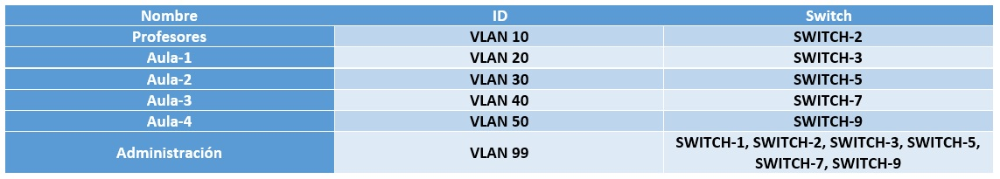
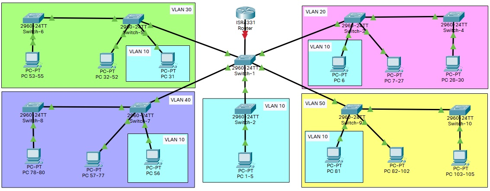
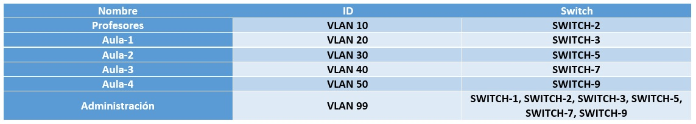
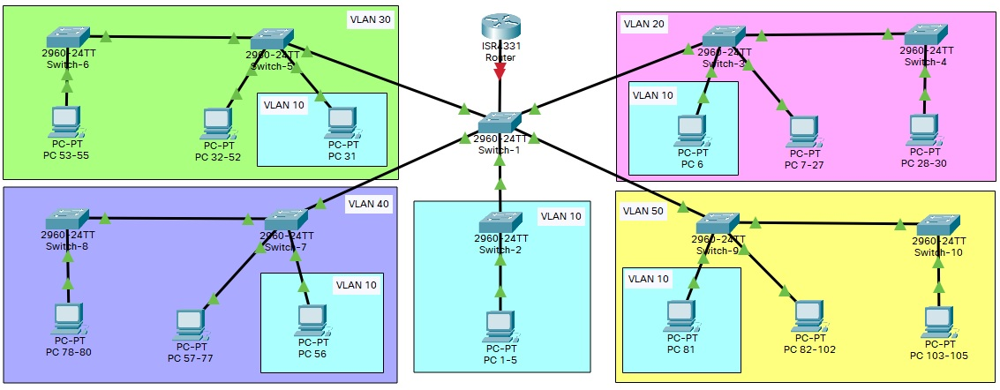

VLAN
Después de organizar la distribución de los diferentes componentes para cada habitación, pasamos a planificar cuáles serán las VLAN que vamos a utilizar:
 VLAN
Andrea Díaz Maeso, Gonzalo Bernabé Guijarro & Víctor Manuel Cermeño Viedma
Después de organizar la distribución de los diferentes componentes para cada habitación, pasamos a planificar cuáles serán las VLAN que vamos a utilizar:
 